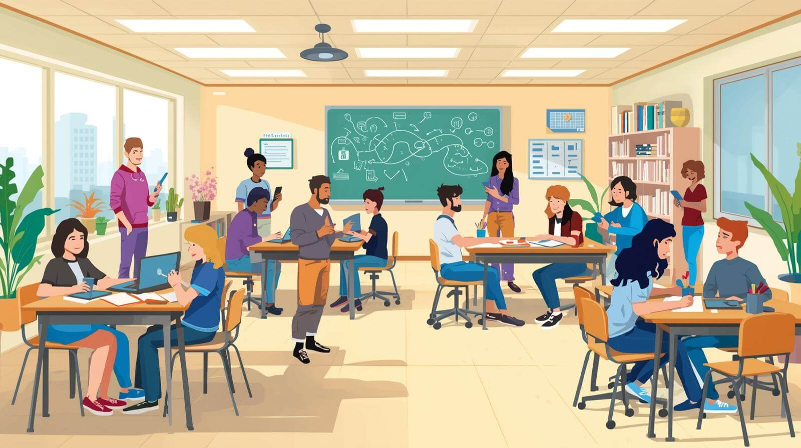
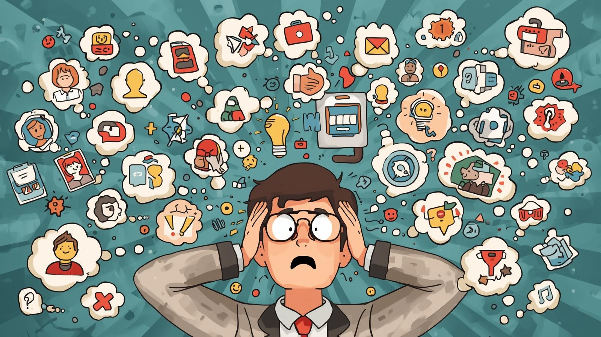

Over the first two weeks of the EDUC 4108 Leveraging Technology for Learning course at Cape Breton University I have had the opportunity to learn about many ways that we can use technology in the classroom. Our group was introduced to SAMR, and more recently got hands on with Google Classroom, HyperDocs, and several assessment tools. Today I am focusing on how we can apply technology to our current lessons to enhance the learning experience of our students, and to give teachers more assessment data to guide our teaching practices.
Collaboration is Key
At the heart of SAMR’s redefined educational experiences is collaboration. Allowing students to collaborate on projects, assignments, and educational resources is now made possible by educational technology. A tool that does it very well is Padlet. Padlet allows students to create interactive boards where they can post images, videos, documents, text, audio clips, and more. Students can collaborate in real-time on a “padlet” of resources, answers to questions and prompts, brainstorm, mind-maps, mood boards, and group projects. Students can also comment and interact with items that their classmates posted on Padlet and have access to a large group of co-created resources.
Tools like Padlet allows students to direct their own learning by exploring resources that they find on their own or select from a curated list made by the teacher, like in a HyperDoc. When I was learning about HyperDocs, I was worried that giving students a choice of what resources they interacted with meant they may not get as much valuable information from one source, as they would another one. Furthermore, I had the concern that if I wanted to assess what the students learned from the resources, it would be difficult to make an equitable quiz if all the students read, watched, or listened to different pieces of learning content.
The Trouble with Student-Choice and Assessment
One way around this issue of differing sources of content is using Google Forms. With Google Forms you can ask the student what resource they interacted with, then have a questionnaire based on that resource. This would be dynamic and change automatically based on what resource they used. However, the drawback of this is you would have to make a separate quiz for each resource. This becomes even more difficult or convoluted if you are making separate quizzes for students based on their learning needs, goals, and outcomes.
Collaboration to the Rescue!
I believe this is where collaboration comes to the rescue. Instead of testing students’ knowledge and understanding with a quiz, you can assess students’ ability to collaborate and interact in a knowledgeable manner. Going back to Padlet, students can then share what they learned from their resources and participate in activities that extend their learning such as commenting and interacting with their classmate’s posts, finding additional resources to share, and connecting their own ideas with their classmate’s ideas. This type of interaction is also much better for student’s learning because they are connecting and interacting with the resource content in a way that is rich and collaborate; opposed to simply doing another test or quiz.
This is the type of collaborative activity that technology enables that can redefine the students’ learning experiences but also benefits the teacher as well. Teachers can go to a single space to see how students are collaborating and use that to assess students. These types of assessments can incorporate performative aspects that draw parallels with the real world. This makes the activities potentially more consistent and indicative with what the students know compared to a written assessment.